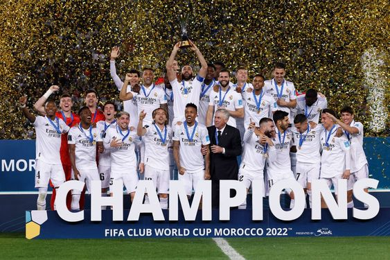
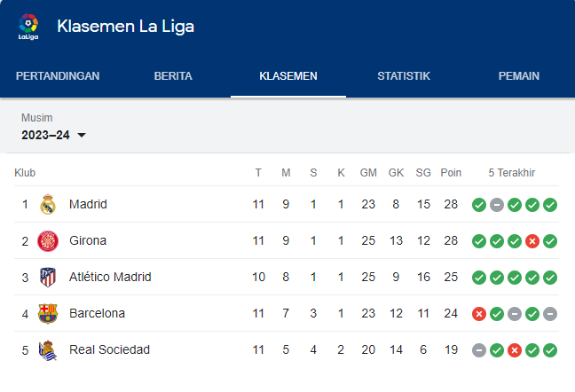

Error
Oktober Full Senyum Real Madrid: 5 Laga, 4 Kemenangan Tak Terkalahkan, Cetak 12 Gol
Gia Yuda Pradana | Diperbarui: 2 November 2023, 09:24 WIB

La Primera - Real Madrid menghadapi Sevilla di Ramon Sanchez Pizjuan pada pekan ke-10 La Liga 2023/2024, Sabtu (21/10/2023). Pertandingan Sevilla vs Madrid setelah jeda internasional ini berakhir dengan skor imbang 1-1.
Tak ada pemenang dalam laga reuni Sergio Ramos dengan Madrid. Sevilla racikan pelatih baru Diego Alonso sempat unggul berkat gol bunuh diri David Alaba di menit 74, tapi Madrid bisa membalasnya melalui gol Dani Carvajal pada menit 78. Hasil imbang kontra Sevilla itu adalah satu-satunya kegagalan menang Madrid sepanjang bulan Oktober 2023.
Real Madrid main tandang melawan juara bertahan Barcelona pada pekan ke-11 La Liga 2023/2024, Sabtu (28/10/2023). Madrid mengalahkan sang rival dalam partai bertajuk El Clasico itu dengan skor 2-1.
Madrid sempat tertinggal setelah gawang mereka dibobol oleh Ilkay Gundogan pada menit 6, tapi bisa berbalik menang. Madrid comeback berkat dua gol Jude Bellingham menit 68 dan 90+2.
Dengan sepasang golnya dalam duel El Clasico tersebut, berarti Bellingham sudah mencetak total 13 gol dalam 13 pertandingan bersama Madrid di semua kompetisi sejak bergabung dari Borussia Dortmund.
Di lain pihak, bagi Barcelona, kekalahan dari Madrid tersebut merusak catatan tak terkalahkan mereka di semua kompetisi musim ini.
Hasil-hasil Real Madrid di Oktober 2023
- 04-10-23 Napoli 2-3 Real Madrid (Liga Champions)
- 07-10-23 Real Madrid 4-0 Osasuna (La Liga)
- 21-10-23 Sevilla 1-1 Real Madrid (La Liga)
- 25-10-23 Braga 1-2 Real Madrid (Liga Champions)
- 28-10-23 Barcelona 1-2 Real Madrid (La Liga).
Sepanjang Oktober 2023, Madrid full senyum. Bagaimana dengan bulan November ini?
Berikutnya, Madrid akan menjamu Rayo Vallecano pada pekan ke-12 La Liga, Senin (6/11/2023). Di atas kertas, pasukan Carlo Ancelotti seharusnya bisa menang.
